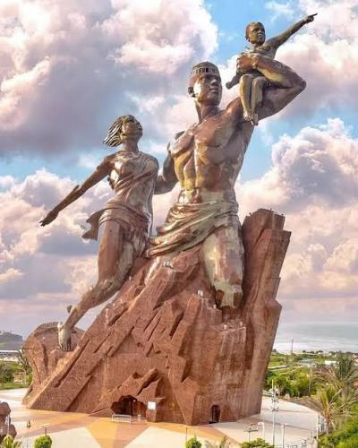
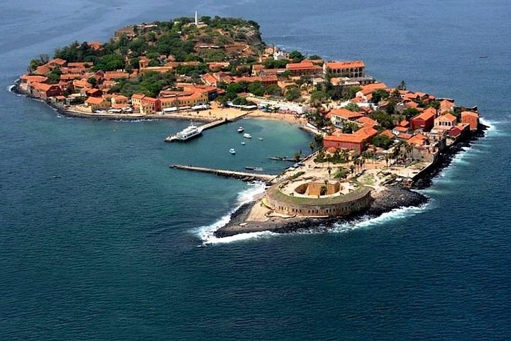
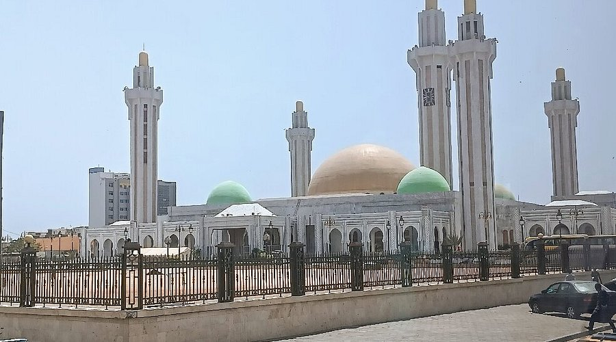
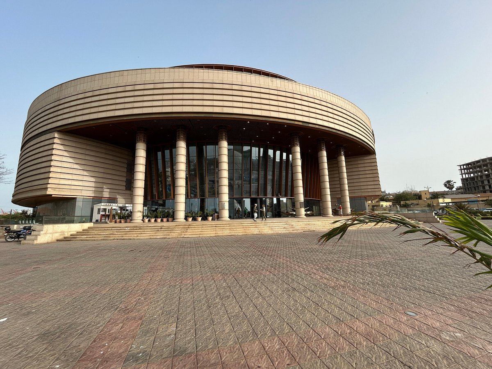
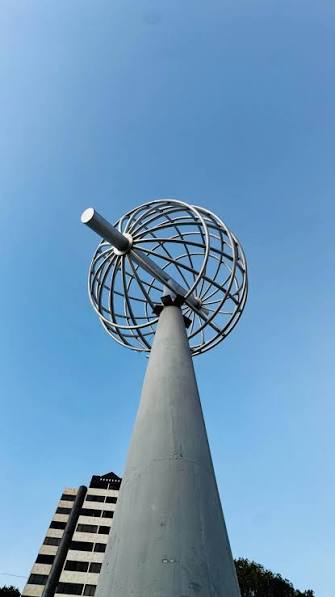

O Senegal, localizado na África Ocidental, é um país rico em história, cultura e memória. Seus monumentos contam a trajetória do povo senegalês, desde o período colonial e a luta pela independência até a valorização da identidade africana.
1 - Monumento do Renascimento Africano

Localizado em Dakar, na colina de Ouakam, é a estátua mais alta da África, com 49 metros de altura. Inaugurado em 2010, durante as comemorações dos 50 anos da independência do Senegal, o monumento representa um homem, uma mulher e uma criança apontando para o futuro. Ele simboliza o renascimento do continente africano, a força, a união e a esperança. Além de seu significado histórico, o local oferece uma vista panorâmica de Dakar e do Oceano Atlântico.
2 - Ilha de Gorée

A Ilha de Gorée, localizada a cerca de 20 minutos de barco de Dakar, é um dos lugares mais importantes da história do Senegal. Declarada Patrimônio Mundial da UNESCO, a ilha foi um dos principais centros do tráfico de escravizados entre os séculos XV e XIX. Hoje, o local abriga a Casa dos Escravos, museus, ruas coloridas e casas coloniais, sendo um espaço de memória, reflexão e turismo histórico.
3 - Grande Mesquita de Dakar

Construída no centro de Dakar, a Grande Mesquita é um dos principais símbolos religiosos do Senegal, país de maioria muçulmana. Com sua arquitetura imponente e minaretes altos, a mesquita é um ponto de referência na cidade e um exemplo da influência islâmica na cultura senegalesa.
4 - Museu das Civilizações Negras

Inaugurado em 2018, em Dakar, o Museu das Civilizações Negras é um dos maiores museus dedicados à história e à cultura africana no mundo. O espaço reúne exposições sobre arte, história, tradições e a diáspora africana, valorizando a identidade negra e a diversidade cultural do continente.
5 - Monumento do Milênio

Localizado na orla de Dakar, o Monumento do Milênio, também conhecido como Porta do Terceiro Milênio, foi inaugurado em 2001. Ele simboliza a entrada da África no novo milênio e a abertura do continente para o futuro, sendo também um local popular para passeios e eventos culturais.